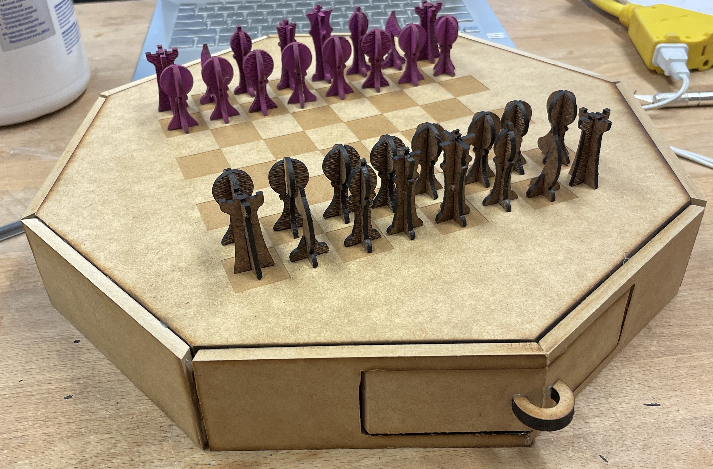
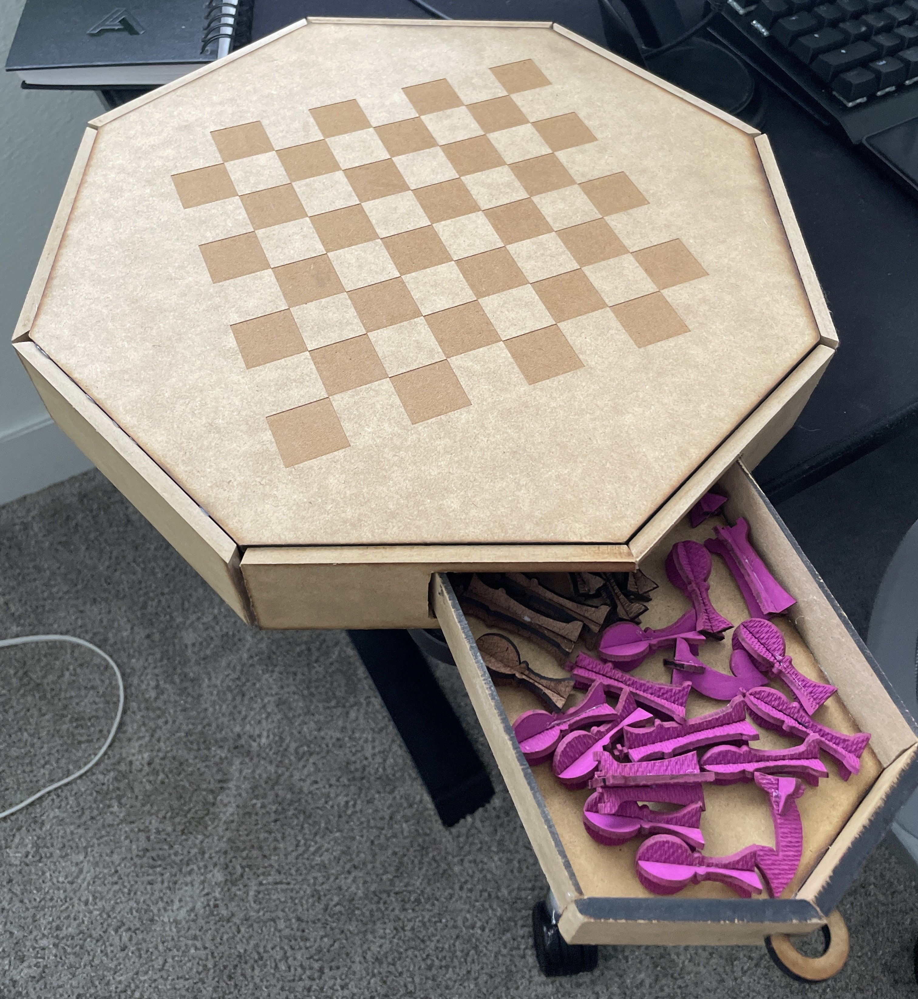

A chessboard made out of laser cut wood made to fully contain its own pieces
This chessboard took forever. Between the countless hours designing in SketchUp, the monumental effort
that was laser cutting through quarter-inch treated wood, and the assembly required to make the octagonal
shape, I can confidently say that this chess board took upwards of 50 hours.
Starting with the design, the edge pieces were no joke. Making an octogon requried precise angles and widths, something that seemed easier in theory than it was in practice. The drawer also took lots of time, because not only did it have to able to be assembled, it needed to slide in and out effectively.
The pieces were also tricky. I started out thinking I was going to do a 3D print, but with the time that would have taken for 32 pieces, I quickly decided against it. Instead, I did more 2D design and laid it all out to be cut with as little space as possible.
Sadly, since at the time I was so concerned with getting it done, I forgot to take physical pictures of my process (suffering). That being said, I can vividly remember spending about 16 hours straight in the BTU on the final day because I didn't grasp just how much failure I would have to go through before it finally worked. In the end though, I am proud of how it turned out both functionally and aesthetically.
